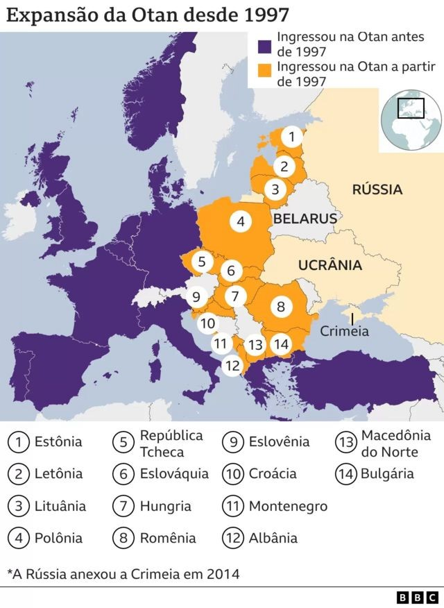

Por que a Rússia decidiu invadir a Ucrânia em 24 de fevereiro de 2022? A resposta a essa pergunta varia de acordo com quem a responde. Leia este resumo feito pela BBC News Brasil e clique nos links destacados no texto para se aprofundar nos temas.
Entre as principais razões apontadas, estão: a expansão da Otan pelo Leste Europeu, a possibilidade de adesão da Ucrânia à aliança militar, a contestação ao direito da Ucrânia à soberania independente da Rússia e o desejo de Vladimir Putin de restabelecer a zona de influência da União Soviética.
 Avaliação de IW desenvolvida por Tiago Estrada 1ºc